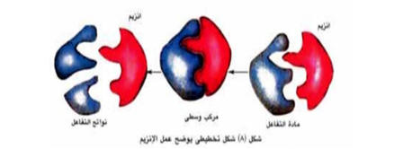
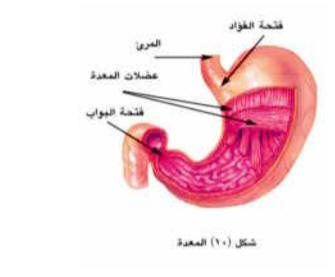

التغذية غير الذاتية
في التغذية غير الذاتية يحصل الكائن الحي على غذائه في صورة مواد عضوية جاهزةومعقدة
غالبا وذات جزيئات ضخمة « بروتينات – نشويات – دهون » لا تستطيع أن تنفذ خلال أغشية
خلايا الكائن الحي ليستفيد منها إلا بعد تكسيرها لجزيئات أصغرحجما وأبسط ترکیبا. «
أحماض أمينية – جلو کوز – أحماض دهنية وجلسرين »وهذه الجزيئات صغيرة ويسهل امتصاصها
ودخولها إلى الخلية بالانتشار أو النقل النشط فتستعملها كمصادر للطاقة أو
للبناءواستمرار النمو .
الهضم
.
تحويل جزيئات الطعام الكبيرة
polymers
إلى جزيئات صغيرة
Monomersبواسطة
التحلل المائي
Hydrolysis
ويساعد على ذلك عمل الأنزيمات.
الإنزيمات
.
الأنزيم مادة بروتينية له خصائص العوامل المساعدة نتيجة لقدرته على التنشيط المتخصص
فكل إنزيم يحفز إحدى التفاعلات الكيميائية المعينة. وهذا التفاعل يعتمدعلى تركيب
الجزئ المتفاعل وشكل الإنزيم، وعندما يتم التفاعل تنفصل الجزيئات الناتجة عن
الإنزيم تاركة إياه بالصورة التي كان عليها قبل التفاعل.

إنزیم + مادة التفاعل مرکب وسطى غير ثابت نواتج التفاعل + إنزیع)مادة التفاعل
ويلاحظ أن الإنزيمات لا تؤثر على نواتج التفاعل ، بل تعمل فقط كعامل حفاز على زيادة
معدل التفاعل حتى يصل إلى حالة اتزان ، وبعض الإنزيمات قد يكون لها تأثير عكسی فنفس
الإنزيم الذي يساعد على تكسير جزئ معقد إلى جزيئين أبسط يستطيع أن يعيد ربط
الجزيئين إلى نفس الجزئ المعقد. وبعض الإنزيمات تفرزها الخلية في حالة غير نشطة
لذلك لابد من وجود مواد خاصةالتنشيطها، فمثلا إنزيم البيسين يفرز بواسطة المعدة
كمادة غير نشطة هي البيسينوجين التي تتحول في وجود حمض الهيدروكلوريك إلى البيسين
النشط وتعتمد درجة نشاط الإنزيم على درجة الحرارة ودرجة الأس الهيدروجيني
PH
الهضم في الإنسان
يتركب الجهاز الهضمي في الإنسان من قناة هضمية تمتد من الفم حتى الشرج وتتكون هذه
القناة من الفم والبلعوم والمرئ والمعدة والأمعاء الدقيقة والأمعاء الغليظة والشرج
وغدد ملحقة بهذه القناة وتشتمل على الغدد اللعابية والكبد والبنكرياس.
وتتم عملية الهضم في الإنسان كما يلي :
أولا: الهضم في الفم
يبدأ الجهاز الهضمي بفتحة الفم ويحوى الفم الأسنان التي تتميز إلى قواطع في مقدمة
الفك التقطيع الطعام ويليها الأنياب لتمزيق الطعام ثم الأضراس لطحن الطعام أما
اللسان فيقوم بتذوق الطعام وتحريكه وخلطه باللعاب، حيث يوجد ثلاث أزواج من الغدد
اللعابية تفتح بقنوات في التجويف الفمى لتصب اللعاب الذي يحتوي على المخاط الذي
يلين الطعام ويسهل إنزلاقه. كما يحتوي على إنزيم الأميليز
Amylase
المسمى بالتيالين
pH7.4) Ptyalin)
الذي يعمل في وسط قلوي ضعيف وهو يحلل النشامائيا إلى سكر ثنائي هو المالتوز ( سكر
شعير) ويوجد في مؤخرة الفم البلعوم حيث يمتد منه أنبوبتان الأولى المرئ والثانية
القصبة الهوائية التي تعتبر جزء من الجهاز التنفسي.
وتعتبر عملية البلع فعل منعکس منسق وهي تدفع الطعام من الفم إلى المري وأثناء ذلك
ترتفع قمةالقصبة الهوائية والحنجرة أمام لسان المزمار لتقفل فتحتهاه.
